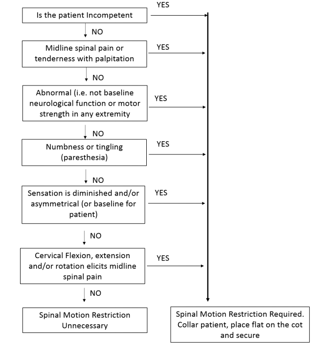

Recognition
- Patient experiencing a mechanism of injury with risk for spinal injury.
Treatment for all providers
- Patients meeting any of the following criteria require spinal motion restriction precautions (SMRP):
- Patients aged < 3 yo or > 65 yo.
- Altered mental status (includes dementia, preexisting brain injury, developmental delay, psychosis).
- Suspected intoxication (alcohol or other substance).
- Insurmountable communication barrier.
- Presence of a distracting injury (an injury believed to be producing pain sufficient to distract the patient from a second (neck) injury.
- History of underlying spinal disease, surgery (includes fusion or hardware implant) or malignancy with potential for bone metastasis.
- Motor vehicle crash >60 mph or with rollover or ejection.
- Falls >3ft/5 stairs (fall from 3ft above ground surface).
- Axial load to head/neck (diving, contact sport collision, heavy weighted object falling on head).
- Significant injury or MOI above clavicles.
- Injuries involving motorized recreational vehicles (ATV, snowmobile etc.).
- Bicycle collision/struck.
- For patients not meeting any of the above criteria, assess as below: 
- Apply a rigid cervical collar (for patients who poorly tolerate a rigid cervical collar [e.g. anxiety, shortness of breath], the collar may be replaced with a towel and/or other padding to restrict movement).
- If able, patients in an automobile may “self-extricate” themselves if not prevented by other injuries. Application of rigid cervical collar can be deferred until the patient has self-extricated.
- Ambulatory patients may be allowed to sit and then lie flat on the ambulance stretcher (no “standing takedowns”).
- Pull sheets, other flexible devices, scoop and scoop like stretchers should be used preferentially to move non-ambulatory patients when appropriate.
- Long spine boards (LSB) should be utilized for extrication and patient movement purposes only. If a LSB is utilized, once the patient is moved onto the ambulance stretcher, the LSB should be removed by using a log roll or lift and slide technique. Patients should only be transported on a LSB if it is necessary for patient safety (e.g. combative patient), if removal from the LSB would delay transportation of an unstable patient or if it is necessary for other treatment priorities (management of increased intracranial pressure)
- Patients should be placed supine on the ambulance stretcher, securely restrained utilizing stretcher straps and instructed to minimize moving their head or neck as much as possible. Elevate the head of the stretcher only if necessary to support respiratory function, patient compliance, or other treatment priorities.
- Consider using SpO2 and EtCO2 to monitor respiratory function.
- Patients with nausea or vomiting may be placed in a lateral recumbent position while maintaining their head in a neutral position using manual stabilization, padding/pillows or the patient’s arm. These patients should also be provided antiemetic therapy per the age appropriate:
- Transfer from ambulance to hospital stretchers and vise-versa should be accomplished while continuing to limit motion of the spine. Slide boards or sheet lifts etc. should used.
- Patients with penetrating trauma such as gunshot or stab wounds do not require SMRP unless a neurologic deficit is noted.
- For pediatric patients ≤6 yo or ≤27 kg (60 lbs) requiring SMRP:
- Transport the patient in a pediatric restraint system as described in the Routine Patient Care Protocol. Utilize pediatric restraint systems for older/ larger children when appropriate when they fall within the device’s recommended range.
- Apply padding and a cervical collar as tolerated to minimize spinal motion. Do not force application of a cervical collar if it is not tolerated by the patient. Utilize rolled towels should be utilized if a cervical collar is not tolerated.
- Avoid any movements that provoke increased spinal movement.
- If the patient requires significant care (e.g. airway management) that cannot be accomplished in the car seat or pediatric restraint system, remove the patient and secure him/her directly to the stretcher.
- Patients involved in a motor vehicle crash (MVC) may remain in their own child safety seat for transportation, provided all of the following criteria are met:
- The seat has a self-contained harness;
- The seat is convertible with both front and rear belt paths;
- Inspection does not reveal cracks or deformation;
- Vehicle in which the seat was installed was capable of being driven from the scene of the crash;
- Vehicle door nearest the child safety seat was undamaged;
- There was no airbag deployment;
- The provider is able to ensure appropriate assessment of the patient’s posterior.
- The safety seat is appropriately secured to the ambulance stretcher, airway seat or bench.